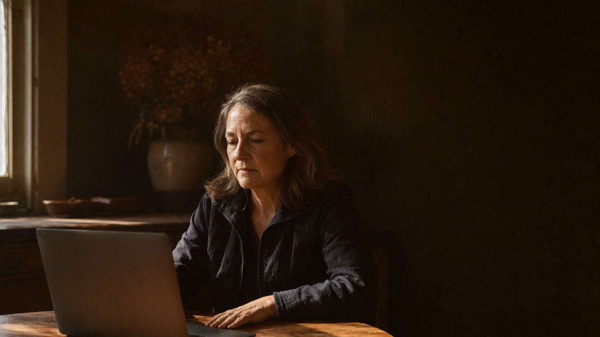

The things worth asking before you commit.
Sixteen questions, answered in full. Open the ones that matter to you.

The engagement
Do you only produce panel events?
No. A produced virtual panel is our flagship, the Own Your Stage Experience, and it is the one format with a published price. We also produce webinars and masterclasses, virtual summits, expert interview series, roundtables and podcast-style conversations, each built the same way: strategy, the right experts, the launch kit, the production, and the content afterwards.
Those are scoped on a Strategy Session, because their size depends on the number of sessions, speakers and deliverables.
What exactly am I paying for at $2,997?
A three month done-for-you engagement built around one professionally produced virtual panel event: strategy, topic development, panelist recruitment and management, complete event branding, the registration page, promotional assets and swipe copy, live production, the recording, authority building content and a closing Momentum Session.
How long does it take?
Each event runs on a minimum eight week planning and production cycle, inside a three month engagement. Delays on your side do not automatically extend the engagement, so the intake deadlines matter more than they look.
Do you fill the room for me?
No, and we say so before you sign rather than after. We create every promotional asset: branding, graphics, the registration page, email and social swipe copy. You and your panelists send them. We do not advertise the event, post on your behalf, email your list or guarantee registration or attendance numbers.
This is also why the panel matters. Five credible experts each inviting their own audience is what builds the room.
What if I have never hosted anything before?
That is the normal starting point. You are not asked to be an event producer. You are asked to prepare, show up and lead a conversation on a subject you already know well. Everything around that is ours.
Who is this not for?
People who are new to their work, still building a first offer, looking for coaching or mentoring, or hoping someone else will promote the event for them. The engagement assumes real experience and a willingness to invite your own audience.
Panelists
Why is there a $47 fee to speak?
It is a commitment and administrative fee, not a speaking fee, and it buys nothing but a reserved position. It offsets onboarding, coordination, speaker communications, graphics, technical setup and support. It also filters for people who will actually turn up prepared and promote, which is what protects the quality of the panel for everyone else in it.
Is the fee refundable?
No, because production and onboarding begin the moment your position is confirmed. The one exception: if we cancel the event and do not offer a comparable rescheduled date that you accept, it is refunded in full.
Can I sell from the stage?
No. You may introduce your business, reference your services as part of the teaching and offer one complimentary resource. You may not run a pitch, solicit purchases or request payment during the event. The primary purpose is education, and the host or moderator may redirect a presentation that drifts.
Can I send a recording instead of appearing live?
No. Live appearance is required, on camera. Prerecorded presentations, AI generated presenters, avatars, voice clones and stand-ins are not permitted without prior written approval.
Who owns the recording?
The studio owns the full event recording and the edited productions. You keep all of your own pre-existing intellectual property, and you grant a license to use your name, likeness and presentation in connection with the event. You may not distribute the complete event recording without written consent. Only the studio may record the event.
Practical
What platform do you use?
Zoom, or another virtual platform designated by the studio. Events run approximately ninety minutes, with panelists checked in twenty minutes before the published start time.
When is payment due?
The full package price is due when the Host Services Agreement is signed. No date is reserved and no work begins until the agreement is signed, payment has processed and the initial intake is complete.
Can I read the agreement first?
Yes, both are published in full on this site rather than sent after you commit. Host Services Agreement and Featured Panelist Agreement.
What is the Readiness Assessment?
Twelve questions across six pillars: positioning, visibility, credibility, platform ownership, content leverage and authority conversion. It takes about five minutes, shows your result on the screen without an email address, and places you as a Hidden, Emerging, Established or Visible Expert, with the next step that fits. Take it here.
Is there anything beyond a single event?
Yes. The Signature Authority Partnership™ is a year-long series of six produced events, one every two months, each followed by its own content package, for experts who want a platform rather than one appearance. It is in development for a small number of founding clients; ask about it on a Strategy Session.
The one question left is the one about you.
Twelve questions, about five minutes, and the result appears on the screen without an email address. It places you on the visibility ladder and says what the next move is, which is usually not the move most people are planning.